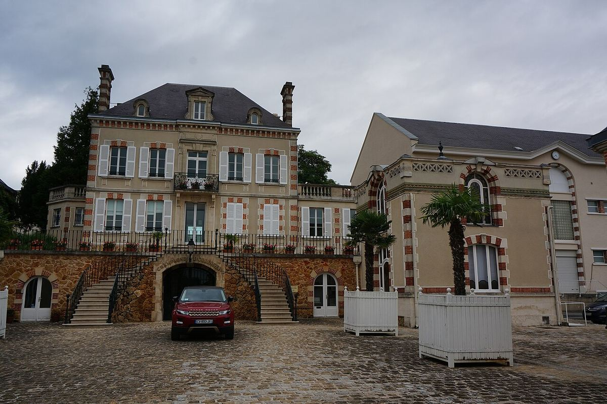

EFFERVESCENT
Maison familiale d’Aÿ fondée en 1829, connue pour un style de champagne dominé par le pinot noir et pour la fermentation d’une partie de ses vins en fût.

Bollinger est née en 1829 à Aÿ, l’un des villages les plus réputés pour le pinot noir, entre la Montagne de Reims et la Vallée de la Marne. Elle a été fondée par Athanase de Villermont, Joseph Bollinger et Paul Renaudin. Au XXe siècle, la maison a été marquée par Elisabeth « Lily » Bollinger, qui la dirigea pendant trois décennies après la mort de son mari en 1941 et devint l’une des personnalités les plus connues de la Champagne. L’entreprise est toujours aux mains de la famille.
La maison possède un important vignoble en propre, planté surtout de pinot noir, socle de son style. Une partie des vins de base fermente en petits fûts de chêne usagés, et Bollinger emploie son propre tonnelier pour les entretenir. Les vins de réserve sont en grande partie conservés en magnums bouchés liège, une pratique peu courante.
Sa gamme comprend le Special Cuvée, brut sans année, le Rosé, les millésimés La Grande Année, le R.D. (récemment dégorgé) et une cuvée très rare issue de petites parcelles de vignes non greffées, Vieilles Vignes Françaises.
Le style Bollinger est souvent qualifié de vineux : des champagnes de corps et de structure, aux notes d’évolution, pensés aussi pour la table.
La maison est aussi connue pour sa longue association avec les films de James Bond.